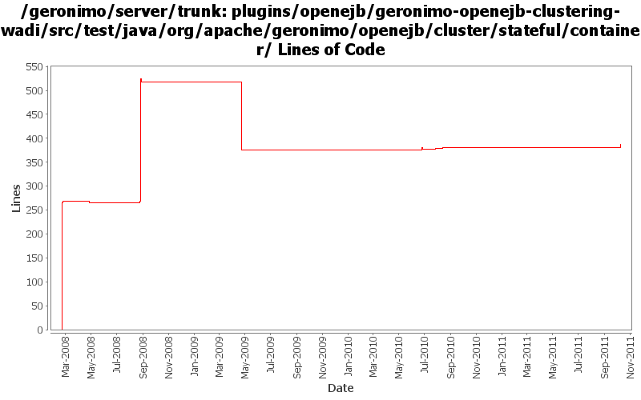

[root]/plugins/openejb/geronimo-openejb-clustering-wadi/src/test/java/org/apache/geronimo/openejb/cluster/stateful/container

| Author | Changes | Lines of Code | Lines per Change |
|---|---|---|---|
| Totals | 30 (100.0%) | 598 (100.0%) | 19.9 |
| dain | 5 (16.7%) | 274 (45.8%) | 54.8 |
| gdamour | 4 (13.3%) | 269 (45.0%) | 67.2 |
| djencks | 4 (13.3%) | 14 (2.3%) | 3.5 |
| dblevins | 2 (6.7%) | 10 (1.7%) | 5.0 |
| gawor | 6 (20.0%) | 9 (1.5%) | 1.5 |
| rwonly | 2 (6.7%) | 8 (1.3%) | 4.0 |
| genspring | 5 (16.7%) | 8 (1.3%) | 1.6 |
| jlaskowski | 2 (6.7%) | 6 (1.0%) | 3.0 |
update codes due to the api change in openejb 4.0.0-beta-1
8 lines of code changed in 2 files:
fix the compilation error caused by openejb api changes.
4 lines of code changed in 1 file:
GERONIMO-6015 JACC PolicyContextID conflicts,
use moduleURI as policyID because openejb side is using moduleURI too with changes in OPENEJB-1442.
2 lines of code changed in 2 files:
additional file changes to fix the compile error due to api change in OPENEJB-1352.
2 lines of code changed in 2 files:
Updates corresponding to OPENEJB-1354: Internal CoreDeploymentInfo class renamed to BeanContext
10 lines of code changed in 2 files:
sync with openejb api updates
2 lines of code changed in 2 files:
update code to match latest openejb api
4 lines of code changed in 2 files:
fix compilation problems - updated openejb api
3 lines of code changed in 2 files:
fix compilation problem from openejb change
2 lines of code changed in 2 files:
fix compilation error introcduced by some openejb restructuring
12 lines of code changed in 2 files:
Fix build by removing few methods. EJB clustering has been broken and still need to be fixed
Should have been included as part of my previous commit.
1 lines of code changed in 1 file:
Updated to latest OpenEJB APIs
1 lines of code changed in 1 file:
Updated to newest StatefulContainer and Cache APIs
269 lines of code changed in 3 files:
Updated to latest OpenEJB APIs
4 lines of code changed in 1 file:
Fix the tests where nulls are not accepted
6 lines of code changed in 2 files:
addState once again during onEndAccess so that the session becomes dirty and
hence is replicated..
2 lines of code changed in 1 file:
1. Add SessionManagerListener to the clustering API. This allows clients
of local SessionManagers to receive callbacks when corresponding
remote SessionManagers join or leave the cluster.
2. Arbitrary WADI clustered services can now be registered: distributed
services are wrapped within ClusteredServiceHolder GBeans which are injected
to BasicWADISessionManager and registered with the underlying WADI
ServiceRegistry.
3. Add support for clustering of SFSBs.
The structure mirrors the one applied for the clustering of Jetty and
Tomcat, i.e. two modules and two configurations are added:
- geronimo-openejb-clustering-wadi: defines a ClusteredRPCContainer
implementation for SFSBs and infrastructure components maintaining a
bookkeeping of the connection addresses a clustered SFSB client can connect
to. The monitoring components, i.e. NetworkConnectorMonitor and
NetworkConnectTracker, works as follows:
o When an OpenEJB NetworkConnector service starts, NetworkConnectMonitor
registers the address of this NC with the clustered service
NetworkConnectorTracker and this for all the locally running clustered SFBS
deployments.
o When an OpenEJB NC services stops, NCM executes an unregisteration reverting
the effects of a NC service start.
o When a clustered SFSB deployments starts, NCM registers its deployment id
with the clustered service NCT for all the locally running NCs addresses.
o When a clustered SFSB deployment stops, NCM executes an unregisters reverting
the effects of a deployement start.
o When a node hosting an EJB module having clustered SFSBs stops or fails, NCM
updates the local NCT so that all the connection addresses registered for
all the clustered SFSB deployments of this node are removed.
- geronimo-openejb-clustering-builder-wadi: defines a builder to handle the
new substitution group element 'clustering' added to geronimo-openejb-2.0.xsd.
The clustering builder works nearly the same than for Jetty and Tomcat except
for the following specificities:
o A (WADI) clustered NCT service is registered.
o The container id for the clustered SFSBs is set to the Geronimo provided
clustered SFSB container implementation.
- openejb-clustering-wadi: declares Geronimo provided clustered SFSB
container implementation.
- openejb-clustering-builder-wadi: declares clustering builder.
266 lines of code changed in 2 files: